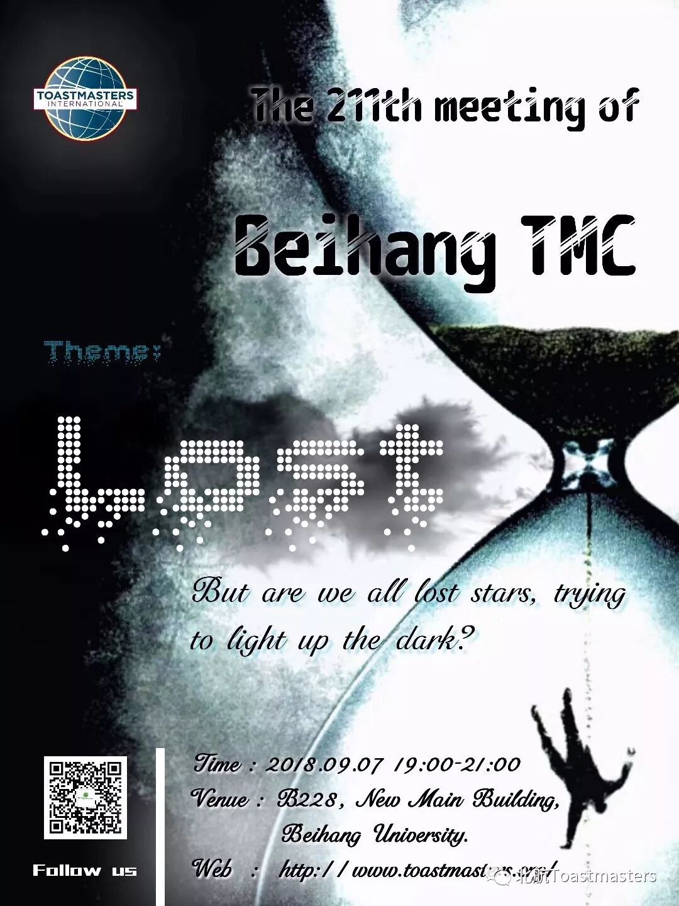
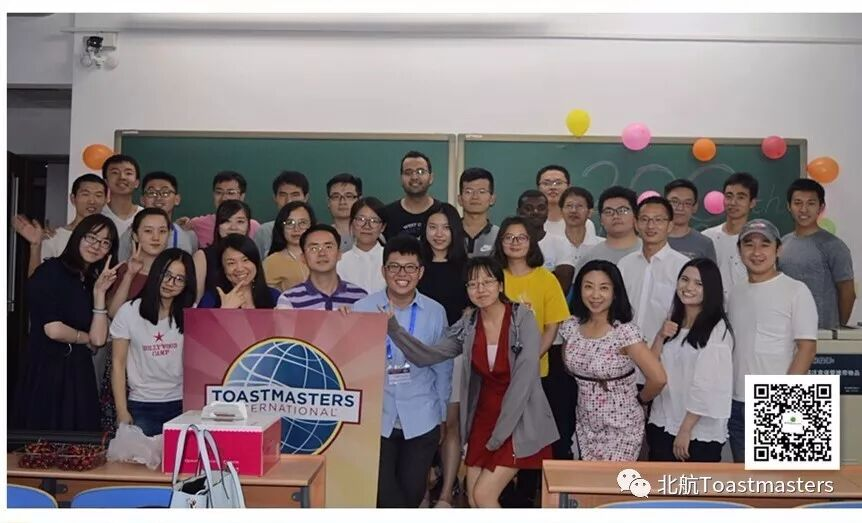
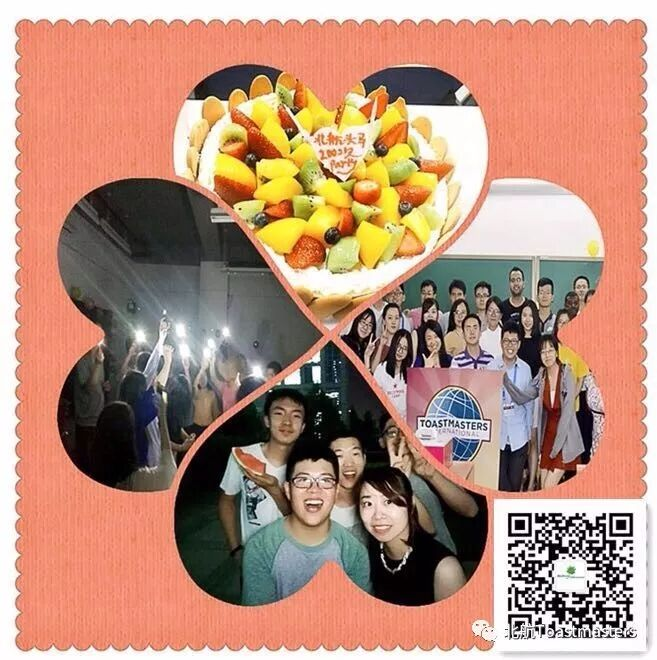

Have U ever lost in life or work, not knowing where to go?
Our TTM Cyril will lead you to find all the lost stars, to re-light up the dark.
Come and Join us to share your storie
Beihang Toastmasters' OPEN DAY
想建立自信？
Do U Want to Build Your Confidence?
想要成长为领导者？
Or Grow to Be a Leader?
想提高自己的沟通能力和公众演讲？
Or Improve Your Communication And Public Speaking Skills?
北航Toastmasters国际英语演讲俱乐部是一个面向校内外提供专业化、高标准英语的交流平台，旨在提升公共演讲和人际沟通能力，培养战略领导和管理能力，增强自信力，并结识校内外、国内外各行各界朋友的英文演讲平台。Beihang Toastmasters International English Speaking Club is a communication
platform to provide people inside and outside of campus with specialized and
high-standard English, aiming at improving public speaking and interpersonal
communication ability, cultivating strategical leading and management ability,
reinforcing confidence, and getting acquainted with friends in all field from inside and outside of campus and at home and abroad as well.
北航Toastmasters自创始以来，就一直秉承Toastmasters International总部的优良传统，始终坚持非营利性的服务理念，努力为学校师生和校外各界朋友提供高质量的服务。
Since BeihangToastmasters was found, it always insists on the great tradition of ToastmastersInternational Headquarters, sticking to the non-profit service concept, withevery effort, offering high-quality service for teachers and students from insideand outside of campus.
此外,北航头马俱乐部是一个全球的会员体系,除了享受总部资料、官网资料以外,还是一个全球的学习交流平台。很多高校以及世界500强企业都有自己内部的头马俱乐部，如:哈佛大学,哥伦比亚大学等各高校,以及微软、汇丰银行、摩根士丹利等,尤其是对需要去外企面试的同学来说, 头马俱乐部员往往会为其增添一块敲门砖。Furthermore, Beihang
Toastmasters Club is a world-wide membership system, sharing data on both headquarters’
and official website, as well as a global learning and communication platform. A
variety of High schools and world top 500 companies have their own internal toastmasters’
clubs, such as Harford University, Columbia University, Microsoft, HSBC, Morgen
Stanley and the like. Especially for students who want to have an interview in
foreign companies, Toastmasters club is a stepping-stone.
北航Toastmasters每周五晚在本院校举行一次，每次常规会议时间约2个小时左右，每次例会都有着固定的形式，由不同的会员在会议中扮演不同的角色。会议总共由三部分组成：即兴演讲环节、备稿演讲环节以及点评环节。
Beihang Toastmasters holds
the regular meeting with fixed pattern on every Friday’s night at Beihang
University, lasting two hours or so, and each member plays a different role in
the meeting. The meeting consists of three sessions: impromptu speaking session,
prepared speaking session and evaluation session.
首先来参加会议就可以啦！不用做特别准备。在会议开始后，主持人需要你举手做一次简单的自我介绍。抓住机会，努力地迈出第一步吧！
Come and join us! The host will invite you togive a brief introduction when the meeting begins. Seize the opportunity and Step out!
所以，还在等什么？？？赶紧来加入我们吧~~！！！长按下图的二维码，关注我们的公众号，每周会推送活动的时间地点和主题。
So, what
are you waiting for? Come and Join us! Please scan the below QR code, follow
our official account, you will find the time, place, and theme of every regular
meeting.
Time: 19:00-21:00, Friday, 7th September
Venue: Room B228, New Main Building, Beihang University
BeihangToastmasters Club is a students' union.
At the same time, we belong to a non-profit international organization called Toastmasters International.
Toastmasters International (TI) is a non-profit educational organization that operates clubs worldwide for the purpose of helping members improve their communication, public speaking, and leadership skills.You can find us by the following map of Beihang University.